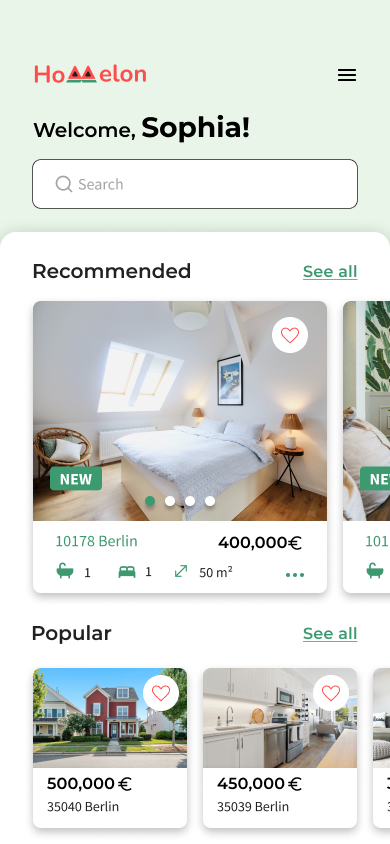
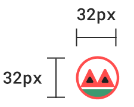
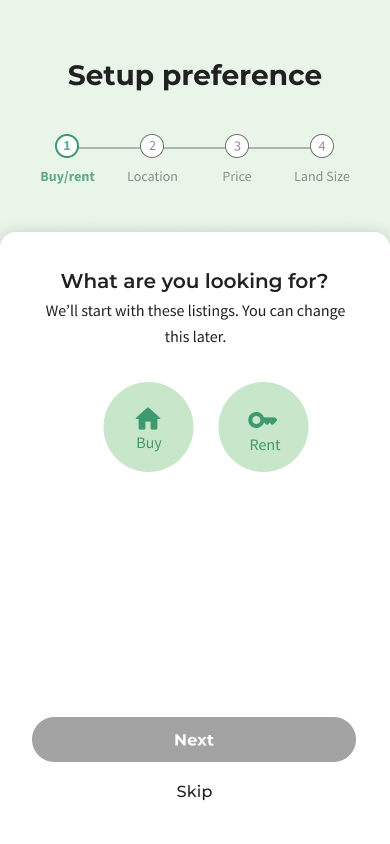
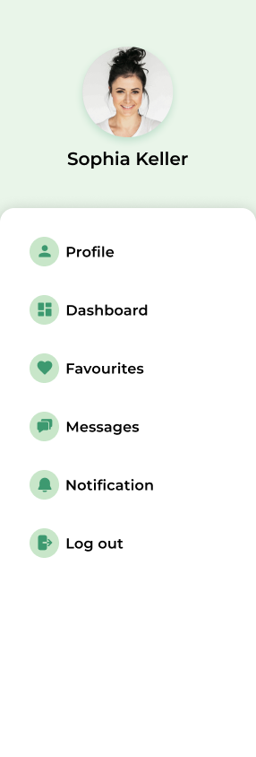

Real estate listings drown new buyers in information.
Today's real estate apps overwhelm new buyers with dense listings and unclear navigation, making it hard to sift through options efficiently. Homelon's goal is to help first-time buyers make informed, financially confident decisions by simplifying how listings are presented and compared.
The user research brief covered user needs but skipped competitive analysis. I audited three apps — Trulia, ImmoScout, and Zoopla — to understand market conventions and identify the essential functions a real estate app needs before designing the user flow.

From the user stories I was given, I prioritized the ones most critical to the real estate use case, using the competitive audit to judge relevance.
Not more listings. Better comparison.
Adding more filters or denser listings would only add to the noise this project set out to cut through. What a buyer actually needs when choosing between two similar properties isn't another search refinement — it's the ability to hold both properties side by side and see where they differ.
That reframes the design problem: the job isn't to show more information, it's to help a buyer make an informed, financially confident decision by simplifying how listings are presented and compared. Every screen decision that follows — from the onboarding flow down to the comparison table — is in service of that one idea.
After learning about what users need and studying the competition, the main features for the app became clear. Using this understanding, I created user flows to map out the steps users need to take to reach their goals. To make it easier to spot the key features of the app, I've used a light green color to highlight them.

What each screen had to prove.
Wireframes to high-fidelity
Based on the user flow, I started with low-fidelity wireframes to nail down the app's fundamental functionality. Mid-fidelity passes then tested layout, visual hierarchy, and spacing. From there, I defined the style guide and moved into high-fidelity screens.

Watermelon palette
The palette pairs Sea Turtle Green — nature, stability — with Coral/Watermelon Red — energy, ambition — balanced by Charcoal for professionalism. Together, green and red strike a deliberate balance between stability and excitement: reassuring enough for a financial decision, energetic enough to feel like progress toward a goal.

Rounded, consistent, real
Icons and UI elements share one rounded-corner language across the app, with the location icon pulling directly from the watermelon palette. Photography avoids polished studio shots in favor of natural daylight and real settings — landscapes, plants — to keep the app feeling trustworthy and approachable rather than staged.

One mark, two lockups
The logo keeps the same rounded, filled shapes everywhere it appears, but isn't one fixed lockup — a compact icon-only mark runs inside the app itself, sized to a 32px grid, while the full wordmark carries the same shapes onto the website and tablet, where there's room for it.

Comparison, close at hand.
Onboarding to search
A short onboarding flow introduces the app before dropping the buyer into search. From there, users see both listings and a map on the same screen — scrolling listings with a swipe-up gesture, or tapping into the map to search visually. A hamburger menu and filter controls sit alongside search so buyers can narrow results without leaving the flow.




Favourite & Compare
Saved listings aren't just a bookmark list. Selecting properties in Favourites drops the buyer into a multi-select mode — pick two or more, then compare them directly, across size, build year, and local factors like schools, shops, and traffic. Tabs for About, Energy, and Cost let the comparison go deeper on demand. This is the app's core decision-making tool: instead of holding two listings in memory while scrolling back and forth, the buyer sees them side by side.


Property Info & Contacts
The property detail screen surfaces everything — visual and written — a buyer needs to decide and act, with a direct path to contacting an agent and a confirmation once that message is sent.


No usability testing.
The short project timeline meant focus stayed on UI design; no usability testing was conducted. Testing with users of varying abilities and disabilities — including accessibility-focused testing — remains the clearest next step before this design could be validated with real buyers.
Research handed off without competitive context.
Competitive positioning wasn't part of the original research scope, so the competitive audit and user-flow prioritization were self-directed rather than handed to me ready-made. This filled the gap for this project, but a fuller research phase would strengthen future iterations.
Homelon simplifies real estate search by putting comparison at the center of the decision, not buried behind separate listing pages.
Working under a tight deadline meant prioritizing ruthlessly — a single cohesive moodboard early on kept the design language consistent across every screen without requiring extra iteration later. The clearest next steps are laid out above — validating the design with real buyers and rounding out the visual language it started with.